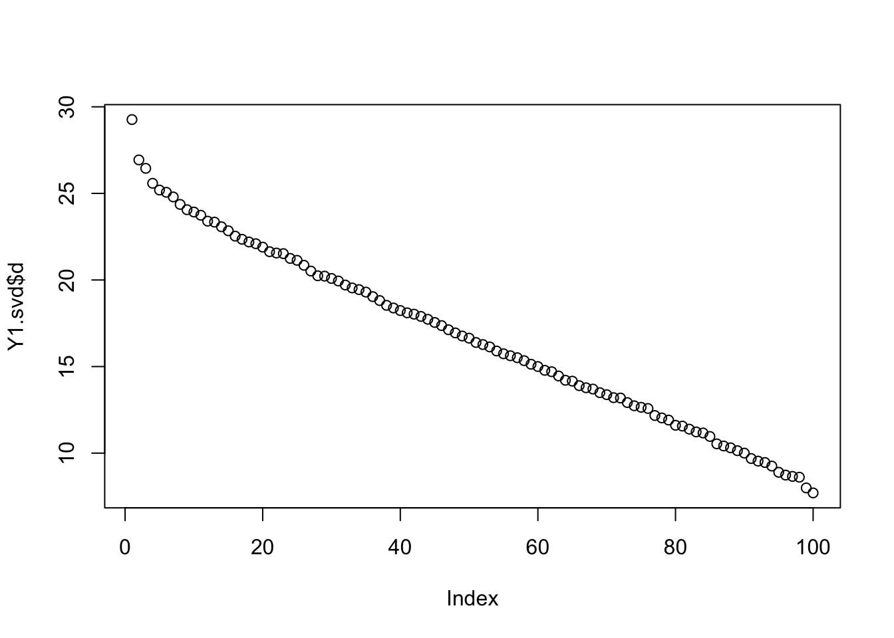

Last updated: 2017-10-12
Code version: 456d6f3
Here’s an example where flashr2 produces a rank 0 result, even when the first eigenvalue is clearly outstanding.
library("flashr2")
n = 100
p = 300
set.seed(7)
# seed 5 also produces an example of same behaviour
Y = matrix(rnorm(n*p),nrow=n,ncol=p)
l= rnorm(n)
f= rnorm(p,0,2/sqrt(p))
Y1 = Y + outer(l,f)
Y1.svd = svd(Y1,1,1)
f1 = flash_r1(Y1,verbose=TRUE,var_type = "constant")objective: -42954.7106874251objective: -42954.5133140329objective: -42954.49506404objective: -42954.4905158867performing nullcheckobjective from deleting factor:-42939.0362923647objective from keeping factor:-42954.4905158867factor zeroed outperforming nullcheckobjective from deleting factor:-42939.0362923647objective from keeping factor:-42939.0362923647nullcheck complete, objective:-42939.0362923647plot(Y1.svd$d)
My thesis is that although in this case the variational lower bound favors the null (rank 0) solution, the actual likelihood - if we could compute it - would favor the rank 1 solution.
For investigating this it may be helpful to run flash without the null check at the end, to see what the optimimum is that it found. This is done as follows:
f2 = flash_r1(Y1,verbose=TRUE,var_type = "constant",nullcheck = FALSE)objective: -42954.7106874251objective: -42954.5133140329objective: -42954.49506404objective: -42954.4905158867sessionInfo()R version 3.3.2 (2016-10-31)
Platform: x86_64-apple-darwin13.4.0 (64-bit)
Running under: OS X El Capitan 10.11.6
locale:
[1] en_US.UTF-8/en_US.UTF-8/en_US.UTF-8/C/en_US.UTF-8/en_US.UTF-8
attached base packages:
[1] stats graphics grDevices utils datasets methods base
other attached packages:
[1] flashr2_0.2-3
loaded via a namespace (and not attached):
[1] Rcpp_0.12.12 git2r_0.19.0 plyr_1.8.4
[4] iterators_1.0.8 tools_3.3.2 digest_0.6.12
[7] evaluate_0.10 tibble_1.3.3 gtable_0.2.0
[10] lattice_0.20-35 rlang_0.1.1 Matrix_1.2-10
[13] foreach_1.4.3 yaml_2.1.14 parallel_3.3.2
[16] stringr_1.2.0 knitr_1.16 REBayes_0.85
[19] rprojroot_1.2 grid_3.3.2 rmarkdown_1.6
[22] ggplot2_2.2.1 ashr_2.1-27 magrittr_1.5
[25] backports_1.1.0 scales_0.4.1 codetools_0.2-15
[28] htmltools_0.3.6 MASS_7.3-47 assertthat_0.2.0
[31] softImpute_1.4 colorspace_1.3-2 stringi_1.1.5
[34] Rmosek_7.1.2 lazyeval_0.2.0 munsell_0.4.3
[37] doParallel_1.0.10 pscl_1.5.1 truncnorm_1.0-7
[40] SQUAREM_2016.8-2 This R Markdown site was created with workflowr